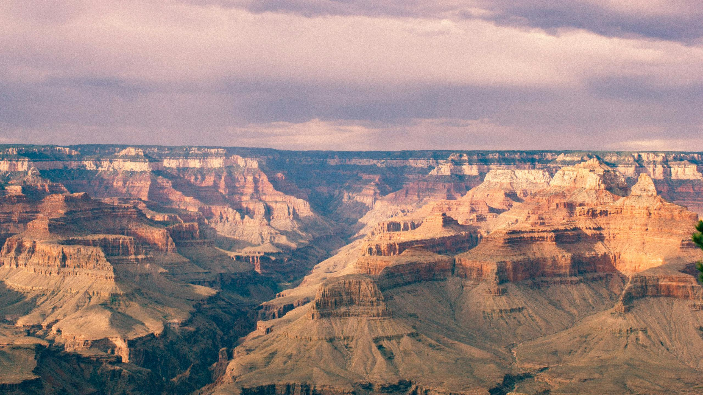

Arizona is the 48th state of the United States of America and it is a popular state for tourism due to the Grand Canyon, a national park, as well as its scenic views of the desert. Learn more about popular cities in Arizona and destination stops below.
The capital of Arizona is Phoenix, which is the fifth largest city in the U.S. Overall, Arizona is known as a desert state due to it's high temperatures, cacti, and vibrant red rocks. Below are some statistics regarding four popular city destinations.
| City | Population | Highest Temperature Recorded (F) |
|---|---|---|
| Phoenix | 1,675,144 | 122 |
| Tucson | 550,306 | 117 |
| Flagstaff | 76,246 | 97 |
| Sedona | 9,903 | 110 |
This national park is a great day trip from Phoenix, AZ as it is a 3.5hr drive from there. At the national park you can visit for the day and walk around the canyon or you can also camp there, though a permit is needed. For more information regarding campgrounds click here.
Most of Arizona is covered by the Sonoran Desert, which means there are several desert plants that you cannot find in other states.